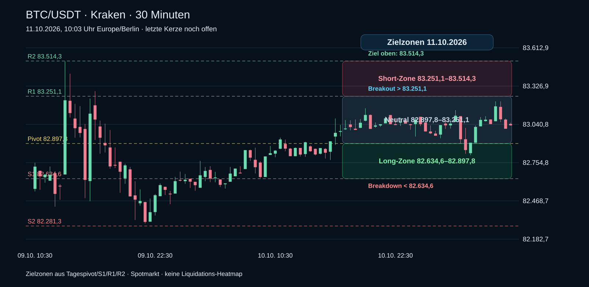

11.10.2026 · 30m-Charts mit Long-/Short-Einstiegen
Binance Spot · Datenstand 09:56 Uhr Berlin. Bedingte Szenarien: erst 30m-Schluss jenseits des Triggers und bestätigter Rücktest. Keine ausgeführten Trades. Diese 30m-Auswertung ist separat von den Tagespivots unten.
BTCUSDT
Excel-Tagesbericht BTC herunterladen


Heatmap-Daten nicht verfügbar; keine Liquidationscluster eingezeichnet.
Tagesstand 11.10.2026 · 11.10.2026, 10:03 Uhr
Aktuelle Kraken-Spotkurse und echte 30-Minuten-Kerzen. Technische Marken aus dem abgeschlossenen Vortag. Die ältere Heatmap steht separat unten.
BTC · aktuelle Zielzonen · 30-Minuten-Chart
Kraken Spot · echte Kerzen · Long-/Neutral-/Short-Zonen und Pivot-Marken aus dem UTC-Vortag

BTC/USDT · 83.034,0
+0,06 % zum Vortagsschluss
Tagesbereich (UTC): 82.810,1–83.213,0
Unter SMA20 (84.406,8); über Tagespivot 82.897,8
Support: S1 82.634,6 / S2 82.281,3
Widerstand: R1 83.251,1 / R2 83.514,3
Chart mit Liquidation Heatmap
Datenstand 03.10.2026